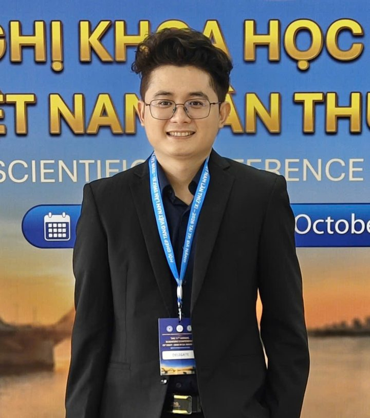

Phẫu thuật gan, mật, tụy và ghép ganSurgery of the liver, bile duct, pancreas and liver transplantation
Bác sĩ Đoàn Thanh Huy, Thạc sĩ, Bác sĩ điều trị tại Bệnh viện Quân y 175. Hơn 1.000 ca phẫu thuật đã tham gia, thành công.Dr. Doan Thanh Huy, MSc, attending surgeon at Military Hospital 175. Took part in more than 1,000 successful operations.

Các nhóm bệnh lý đã tham gia điều trịConditions treated
Tỷ lệ theo tổng số ca phẫu thuật từ năm 2021 đến nay.Share of all operations since 2021.
Bệnh lý đường mật, túi mật, sỏi mậtBile duct, gallbladder and gallstone disease
Bệnh lý ganLiver disease
Bệnh lý tụyPancreatic disease
Ghép ganLiver transplantation
Giới thiệuAbout
Bác sĩ Huy làm việc tại Khoa Phẫu thuật Gan mật tụy, Bệnh viện Quân y 175, từ năm 2021. Chuyên môn của anh là phẫu thuật bệnh lý gan, mật, tụy và ghép gan, với hướng nghiên cứu về sỏi đường mật và ứng dụng ICG trong phẫu thuật nội soi.Dr. Huy has worked in the Hepatobiliary and Pancreatic Surgery Department of Military Hospital 175 since 2021. He specialises in liver, bile duct and pancreatic surgery and liver transplantation, with research on bile duct stones and ICG fluorescence in laparoscopic surgery.
Kỹ năngSkills
- Phẫu thuật sỏi đường mậtBile duct stone surgery
- Ứng dụng ICG trong phẫu thuậtICG in surgery
- Nghiên cứu khoa họcScientific research
Thạc sĩ Ngoại Tổng quátMSc in General Surgery
Trường Đại học Y khoa Phạm Ngọc ThạchPham Ngoc Thach University of MedicineBác sĩ đa khoaDoctor of Medicine
Khoa Y, Đại học Quốc gia TP.HCMSchool of Medicine, VNU-HCMBác sĩ điều trị, Khoa Phẫu thuật Gan mật tụyAttending surgeon, Hepatobiliary and Pancreatic Surgery
Bệnh viện Quân y 175, TP.HCMMilitary Hospital 175, Ho Chi Minh CityNghiên cứu khoa họcResearch
Tham gia 2 đề tài cấp cơ sở và 7 công trình công bố.Participated in 2 institutional research projects and 7 publications.
Phẫu thuật nội soi kết hợp nội soi đường mật tán sỏi điện thủy lực trong điều trị sỏi đường mậtLaparoscopy combined with cholangioscopic electrohydraulic lithotripsy for bile duct stones
Cấp cơ sở, Bệnh viện Quân y 175Institutional level, Military Hospital 175Ứng dụng chất chỉ thị màu huỳnh quang ICG trong phẫu thuật nội soi cắt túi mậtICG fluorescence in laparoscopic cholecystectomy
Cấp cơ sở, Bệnh viện Quân y 175Institutional level, Military Hospital 175- Kết quả dẫn lưu túi mật qua da trong điều trị viêm túi mật cấp do sỏi tại BV Quân y 175 Tạp chí Y học cộng đồng, 2025 · tác giả chínhfirst author
- A rare case report of omental synovial sarcoma complicated hemoperitoneum and literature review World Journal of Surgical Oncology, 2025
- Động mạch gan chung thay thế từ động mạch mạc treo tràng trên: nhân một trường hợp hiếm gặp Tạp chí Y dược học Quân sự, 2025
- Emergency pancreaticoduodenectomy for complex pancreaticoduodenal damage following blunt abdominal trauma International Journal of Surgery Case Reports, 2024
- Streptococcus suis Associated Meningitis in Southern Region in Vietnam American Journal of Tropical Medicine & Hygiene, 2024
- Mucocele of the appendix: through 8 cases at Military Hospital 175 Tạp chí YDTH 175 số 38, 2024
- Nhân một trường hợp sarcoma hoạt dịch mạc nối lớn Tạp chí YDTH 175 số 36, 2023
Liên hệContact
Dành cho bệnh nhân, người nhà và đồng nghiệp muốn hội chẩn hoặc hợp tác.For patients, families and colleagues seeking consultation or collaboration.